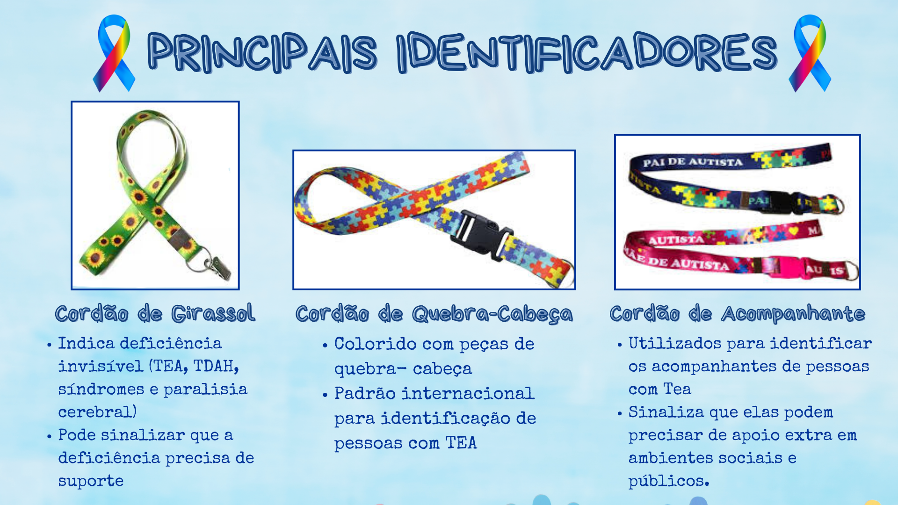

Definição
O TEA é um distúrbio caracterizado pela alteração das funções do neurodesenvolvimento, que podem englobar alterações qualitativas e quantitativas da comunicação, seja na linguagem verbal ou não verbal, na interação social e do comportamento, como: ações repetitivas, hiperfoco para objetos específicos e restrição de interesses.
CARACTERÍSTICAS DO TEA
- SENSIBILIDADE SENSORIAL
Como as pessoas respondem a estímulos como luz, som, toque e cheiro.
-
COMPORTAMENTO REPETITIVO OU RESTRITO Se refere a ações que são executadas de maneira repetitiva
-
RIGIDEZ COGNITIVA
Dificuldade em adaptar pensamentos e mudar de ideia
-
HIPERFOCO Concentração intensa e prolongada em uma atividade especifica
-
SELETIVIDADE ALIMENTAR Comportamento caracterizado por restrições na variedade alimentar consumida que é mais comum em crianças
-
DIFICULDADE DE INTERAÇÃO Envolve desafios em compreender e responder interações socias de maneira adequada
História
Primeiros Registros
Embora haja relatos de comportamentos semelhantes ao autismo em textos antigos, o autismo como conceito clínico foi descrito pela primeira vez na década de 1940. Dois médicos são creditados por suas primeiras descrições:
Leo Kanner (1943): Um psiquiatra austríaco que trabalhava nos Estados Unidos, Kanner publicou um artigo descrevendo 11 crianças que apresentavam dificuldades marcantes em interação social, comportamento repetitivo e comunicação. Ele usou o termo "autismo infantil precoce" para descrever essas crianças, associando a condição à desconexão social.
Hans Asperger (1944): Um pediatra austríaco, Asperger, independentemente de Kanner, descreveu um grupo de crianças com características semelhantes, embora com habilidades verbais mais desenvolvidas. Seu trabalho só foi amplamente reconhecido muito tempo depois, e sua descrição deu origem ao termo "Síndrome de Asperger."
Durante décadas, o autismo foi frequentemente mal compreendido. Nas décadas de 1950 e 1960, havia muitas teorias equivocadas sobre suas causas, como a infame teoria das "mães geladeiras", que atribuía o autismo à frieza emocional dos pais, especialmente das mães. Essa ideia, promovida pelo psicanalista Bruno Bettelheim, foi posteriormente desmentida.
Nos anos 1970 e 1980, a pesquisa sobre o autismo começou a se afastar dessas interpretações psicológicas e a focar em suas bases neurológicas e genéticas. Descobertas revelaram que o autismo era um transtorno do desenvolvimento com componentes biológicos complexos.
Nos anos 1990, o conceito de "transtorno do espectro autista" começou a ser mais aceito. O termo "espectro" foi utilizado para destacar a ampla variedade de sintomas e níveis de severidade dentro do autismo. Isso também incluiu a inclusão da Síndrome de Asperger dentro do espectro.
Hoje, o autismo é amplamente reconhecido como uma variação natural do desenvolvimento neurológico, e há um foco crescente na inclusão, aceitação e apoio aos indivíduos no espectro.
Tipos de autismo
Este nível inclui pessoas no espectro autista que precisam de suporte mínimo e podem funcionar de maneira relativamente independente com algum auxílio.
Autismo leve, com necessidade de suporte mínimo.
Pessoas nesse nível necessitam de um suporte mais significativo, tanto em interações sociais quanto no controle de comportamentos repetitivos.
Autismo moderado, com necessidade de suporte substancial.
Esse é o nível mais severo de autismo, em que a pessoa requer apoio intensivo nas atividades diárias e em interações sociais.
Autismo severo, com necessidade de suporte muito substancial.
Causas e Diagnóstico
PRINCIPAIS CAUSAS DO TEA
- Fatores Genéticos
- Herança Genética
- Mutação Genética
- Interação Genética
- Fatores Ambientais
- Idade parental
- Infecções
- Prematuridade
- Fatores Neurobiólogicos
- Volume Cerebral
- Organização Anormal do Cortex Cerebral
Como é realizado o Diagnóstico do TEA?
O diagnóstico do autismo é feito por meio de uma avaliação clínica que observa o comportamento e o desenvolvimento da criança. Os diagnósticos são baseados no:
- Histórico Familiar
- Avaliação Comportamental
- Critérios do DSM-5
- Exclusão de Outras Condições
Acessibilidade
O autismo, uma condição “invisível” que afeta a estrutura cognitiva, pode gerar questionamentos sobre a necessidade de acessibilidade. A Lei 12.764/2012 (Lei Berenice Piana) garante que pessoas autistas tenham os mesmos direitos de acessibilidade que outras com deficiência, reconhecendo o autismo como uma deficiência para fins legais.

EMPATIA X AUTISMO
Pessoas autistas podem ter dificuldade em interpretar sinais sociais, mas isso não significa falta de empatia. Elas podem sentir emoções intensas, mas expressá-las de formas diferentes. Compreender isso ajuda a criar ambientes mais inclusivos e solidários.
Mitos e verdades
- VACINAS CAUSAM AUTISMO
De acordo com a Organização Mundial da Saúde, não há evidências de que vacinas causem Transtorno do Espectro Autista (TEA). As causas do autismo estão principalmente associadas a fatores genéticos e ambientais, mas não há relação com nenhuma vacina.
- TODOS OS AUTISTAS SE COMPORTAM DA MESMA FORMA
Não é possível generalizar o comportamento e as dificuldades de pessoas com TEA. Algumas podem ser mais agressivas ou ter dificuldades de socialização, enquanto outras enfrentam desafios específicos, como escrever ou aprender matemática. Cada caso é único.
- AUTISTAS NÃO PODEM FREQUENTAR A ESCOLA
Embora muitos acreditem que autistas não possam frequentar escolas regulares, isso não é verdade. As leis garantem o direito à educação e, quando necessário, asseguram um acompanhante especializado na sala de aula, cujo custo é responsabilidade da escola, conforme o Decreto 8.368/14.
- NÃO EXISTEM EXAMES PARA DIAGNOSTICAR O AUTISMO
O diagnóstico de autismo é clínico, baseado em critérios do DSM-V e do CID-11. Não há um exame específico para identificar o autismo; o diagnóstico é feito através de avaliações comportamentais.
- O TRATAMENTO DO AUTISMO É MULTIDISCIPLINAR
Uma pessoa com autismo recebe acompanhamento multidisciplinar, o que significa que é tratada por diversos especialistas, como médico, fonoaudiólogo, terapeuta ocupacional, psicólogo e fisioterapeuta. Os profissionais envolvidos no tratamento são selecionados com base nas necessidades específicas da criança.
- TRAUMAS PSICOLÓGICOS CAUSAM O AUTISMO
As causas do autismo não são totalmente conhecidas, mas estão relacionadas a fatores genéticos e ambientais antes do nascimento. Traumas psicológicos não causam TEA, mas podem agravar o desenvolvimento das crianças que já possuem o transtorno.
REDES DE APOIO AOS AUTISTAS
No Brasil, existem várias redes de apoio e organizações dedicadas a apoiar autistas e suas famílias. Aqui estão algumas das principais: